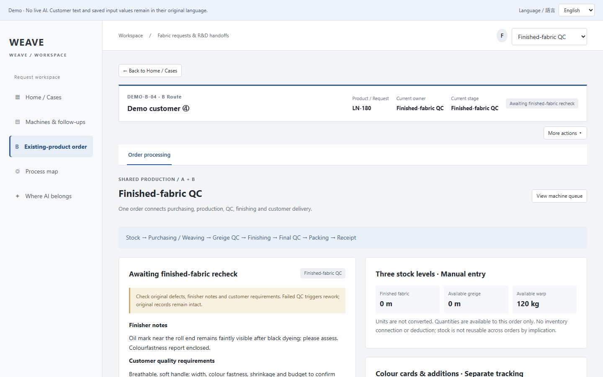

Case Study 01 · Textile operations
WEAVE — From one customer email to a delivered roll of fabric
A handoff workspace for customer service, R&D, purchasing, production, QC, finishing and dispatch. Two entry routes, a shared downstream flow, partial material deliveries, defects that travel with the roll; a seven-chapter case covering problem, scope, decisions, testing and AI boundaries (2 implemented / 14 reserved / 8 deliberately not AI).